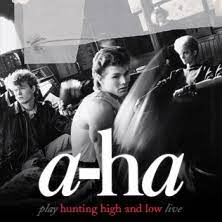

Take On Me
Song By A-ha
original video

We're talking away
I'm to say I'll say it anyway
Today's another day to find you
Shying away
I'll be coming for your love, ok?
Take on me
Take me on
I'll be gone
In a day or two
So needless to say
I'm odds and ends
But I'll be stumbling away
Slowly learning that life is ok
Say after me
It's no better to be safe than sorry
Take on me
Take me on
I'll be gone
In a day or two
Oh the things that you say
Is it live or
Just to play my worries away
You're all the things I've got to remember
You're shying away
I'll be coming for you anyway
Take on me
Take me on
I'll be gone
In a day or two
I don't know what
HOME